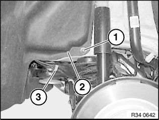
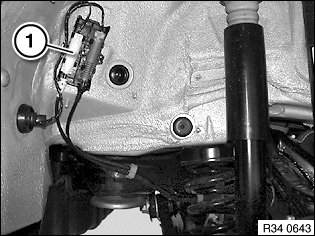
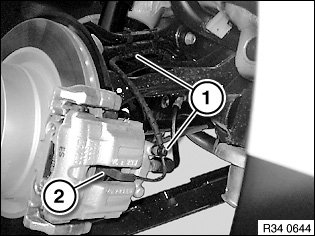

34 35 003 Replacing A Brake Pad Sensor (Rear)
34 35 003 Replacing a brake pad sensor (rear)Important!
The brake pad wear sensor must be replaced once it has been removed (brake pad wear sensor loses its retention capability in the brake pad).
If a brake pad wear sensor that has already been ground has to be replaced even though the minimum brake pad thickness has not yet been reached, you must observe the following: The new sliding contact must be filed down with a file to the same length as the ground sliding contact.
Necessary preliminary tasks:
^ Remove rear right wheel

Slacken nut (1).
Pull wheel arch trim (2) gently to one side.
Disengage cable from holders (3).

Disconnect plug connection (1).
Installation:
Ensure proper locking of the plug connector and proper seating of the cable in the brackets.

Disengage cable from holders (1).
Detach brake pad wear sensor (2) in direction of arrow from brake caliper (3).
Installation:
Make sure holders (1) and brake pad wear sensor (2) are correctly seated in brake caliper.